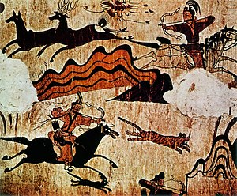

고구려는 기원전 37년에서 서기 668년까지 한반도 북부와 만주 일대를 지배한 고대 국가이다. 고구려는 기원전 37년 주몽이 이끄는 부여족의 한 갈래가 압록강 지류인 동가강(佟佳江) 유역에 건국함으로써 성립되었다. 
고구려는 초기부터 한족(漢族)과의 투쟁 과정을 통해 강대해졌다. 1세기 태조왕 대에 들어서 고구려는 중앙집권국가의 기틀을 마련하였다. 또한 태조왕은 동예와 옥저를 복속시키고, 낙랑군과 현도군은 압박하여 영토를 넓혔다. 고국천왕은 왕위의 부자상속제를 마련하였고, 5부의 행정구역을 설정하는 등 체제 정비를 단행하여 왕권이 보다 강화되었다.